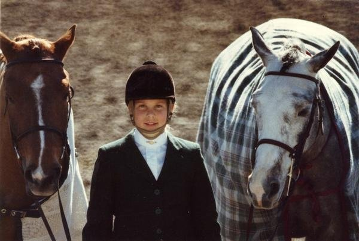
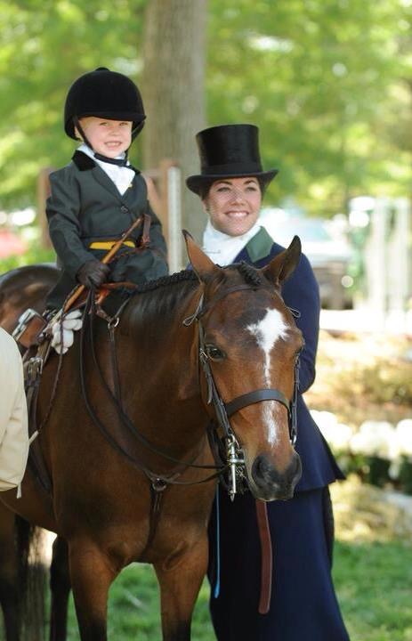
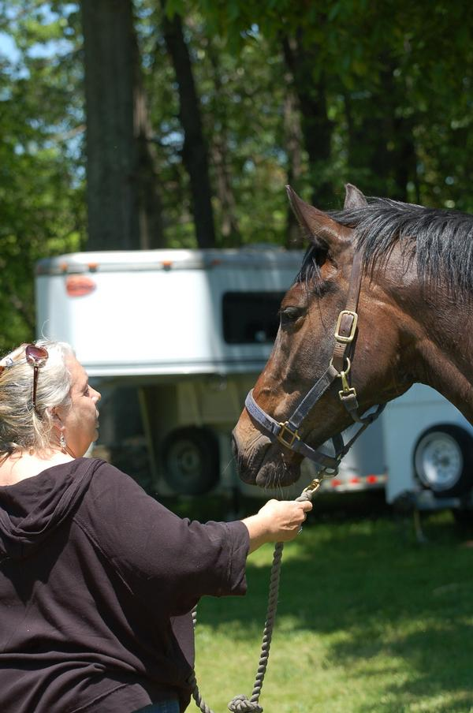

Ponies
Just ponies. No apology.
For the families, trainers, kids, and pony people who know that a small pony with a fan club can change a whole childhood.

Ponies for Sale
Photo first. Useful truth right under it.
Listings with type, size, location, price, video, rider fit, and the honest note a trainer needs before scheduling a trial.

Small pony. Princeton, NJ. $14,500. Walk-trot to short stirrup.

Medium pony. Ocala, FL. $38,000. Fancy, forward, and useful.

Write the listing like a pony person, not a mystery ad.
Ponies for Lease
Annual, seasonal, local, and show lease paths.
Lease listings should make the expectations obvious: rider type, schedule, term, show plans, trainer involvement, and what kind of kid makes sense.
Large pony lease. Lexington, KY. Mid-five lease. Division kid.

Large green pony. Columbus, OH. Annual lease. Needs a trainer with a plan.
Tell the truth up front so the right family finds you faster.
Just Ponies Board
All ponies, all the time.
Sale, lease, wanted ads, pony equipment, old videos, sold pony updates, and the tiny details only pony people care about.


Sold Pony Archive
The ponies people still ask about.
Not a transaction graveyard. A place for old photos, previous names, update trails, and the ponies who made kids who they are.
Pony Profile
A scrapbook page crossed with a sales sheet.
Every pony profile should answer: is this my kid's ride, who knows this pony, what is the honest note, and what do we need before trying her?
Gallery, video, stats, rider fit, show history, USEF notes, and contact path.